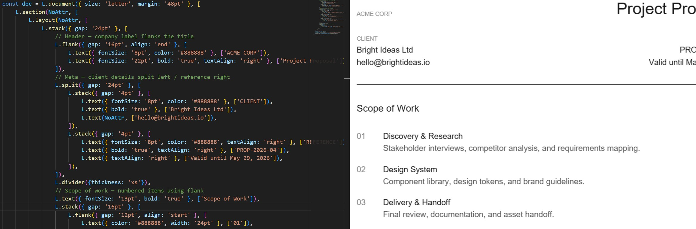

Node/JS · .NET · PHP · Python
PDF as Code
PDF as Code
on every platform
You describe a document as code or XML.
Lpdf renders a compact, pixel-perfect PDF — identical across platforms.
Free Community License · Professional & Enterprise licenses available · No usage metering

Runs on
Node.js
.NET
PHP
Python
Browser
VS Code
Highlights
Layout system, simplified coordinates, data-binding built-in, no third-party dependencies.
Use Lpdf for all your documents.
Invoices & receipts
Line-item tables, totals rows, QR codes, and JSON data binding. Renders in under 200ms per document.
Contracts & agreements
Multi-page documents with pinned headers and footers, section bookmarks, and interactive signature fields.
Certificates
Landscape layouts with custom fonts, design tokens, canvas borders, and a seal image — all in a single XML file.
Shipping labels
Precise fixed-size layouts with EAN-13, Code 128, or QR barcodes, address blocks, and carrier-specific dimensions.
Reports & statements
Multi-section documents with mixed page sizes, paginating tables, and structured data sourced from JSON at render time.
Purchase orders
Formal procurement documents with vendor details, itemised tables, approval fields, and company branding.
Typography
Tables
Barcodes & QR
Form fields
Images
Headers & footers
VS Code
Edit, preview, and export — without leaving your editor.
The Lpdf VS Code extension gives you a live PDF preview that updates as you type. Schema-backed autocomplete covers every element and attribute, inline validation catches errors before runtime, and the data binding UI lets you wire a JSON payload to your template interactively.
Live preview
See a rendered PDF alongside your XML as you edit — no build step, no reload.
XSD autocomplete & validation
Full schema coverage — every element, attribute, and allowed value, with inline error squiggles.
Code generation & PDF export
Generate ready-to-run adapter code for Node, .NET, PHP, or Python — or export the PDF directly.